A selection of work across domains
SMM panel for social media marketing (2 versions)
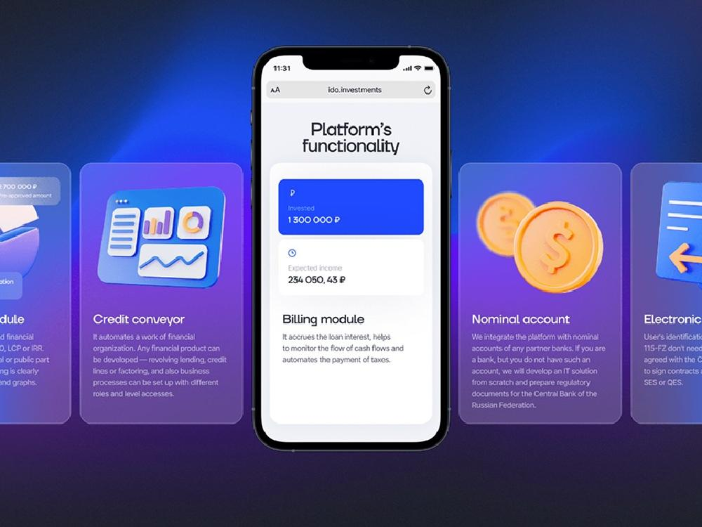
Drone fire-detection system with Android controller (lost project)
Multi-repository codebase audit revealing 70% code duplication across frontend and backend projects
Analytics dashboard with fully serverless backend
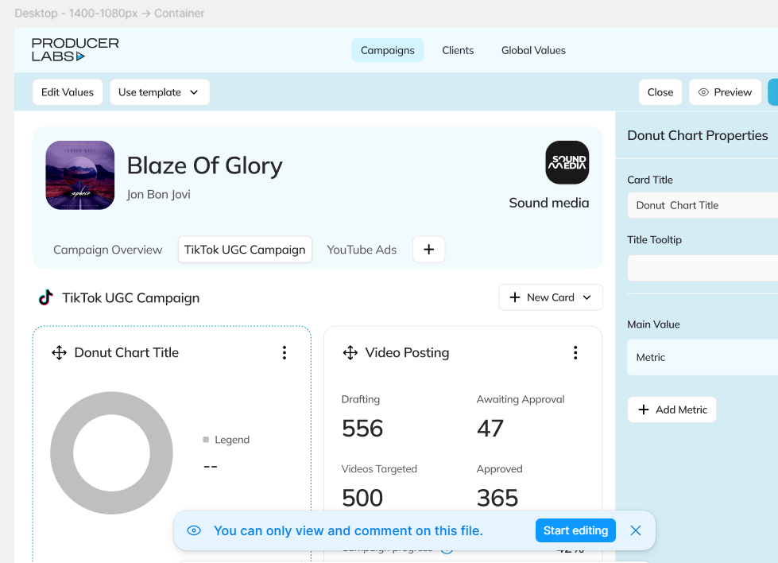
Content creation platform with Django backend and React frontend
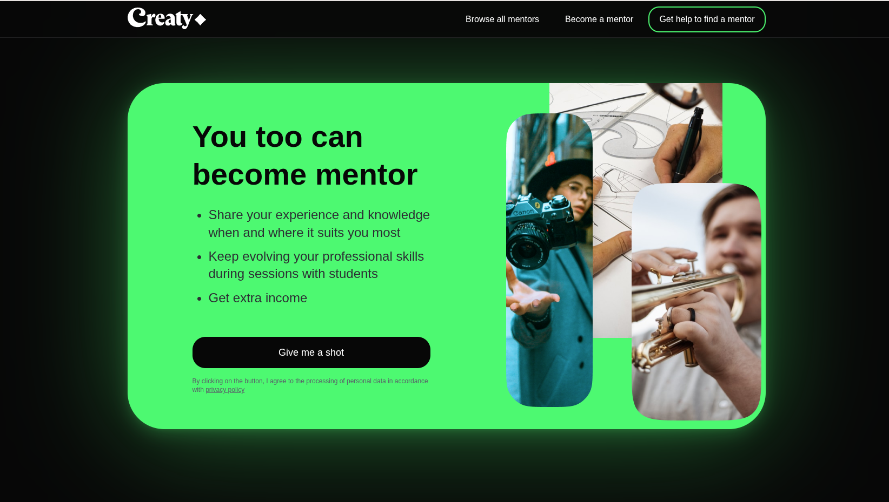
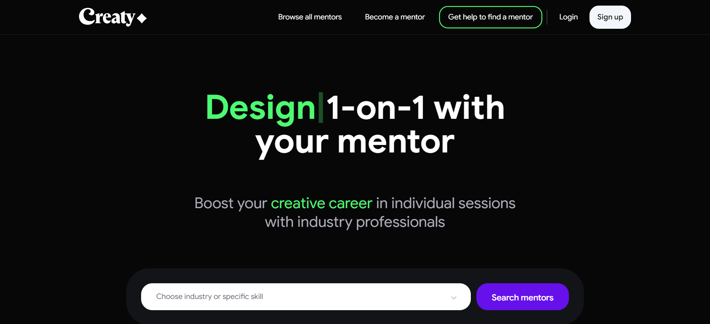
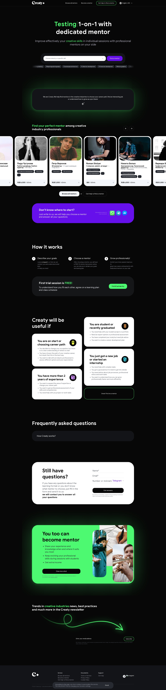
Reactive TypeScript ecosystem with lightweight JSX inflator, observable state, SSR, and router
View on GitHub →ERPNext / Frappe customizations for business process automation
View on GitHub →Web platform frontend
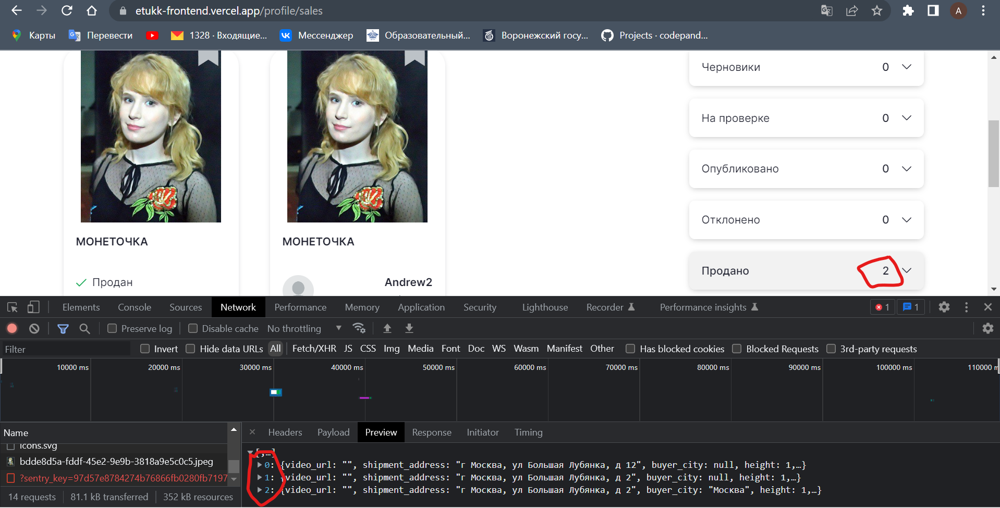
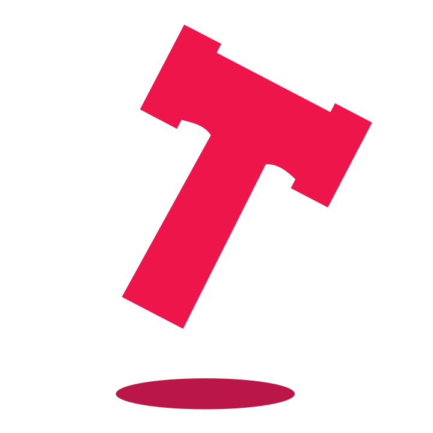
Feature management platform deployed on Cloudflare Workers
Series of charity fundraising platforms — Water, House, Childhood
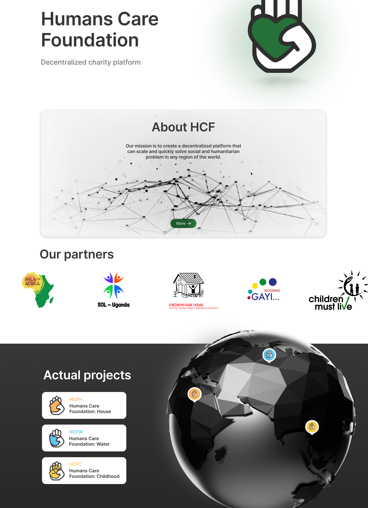
Multi-chain NFT platform with landing pages and marketplace
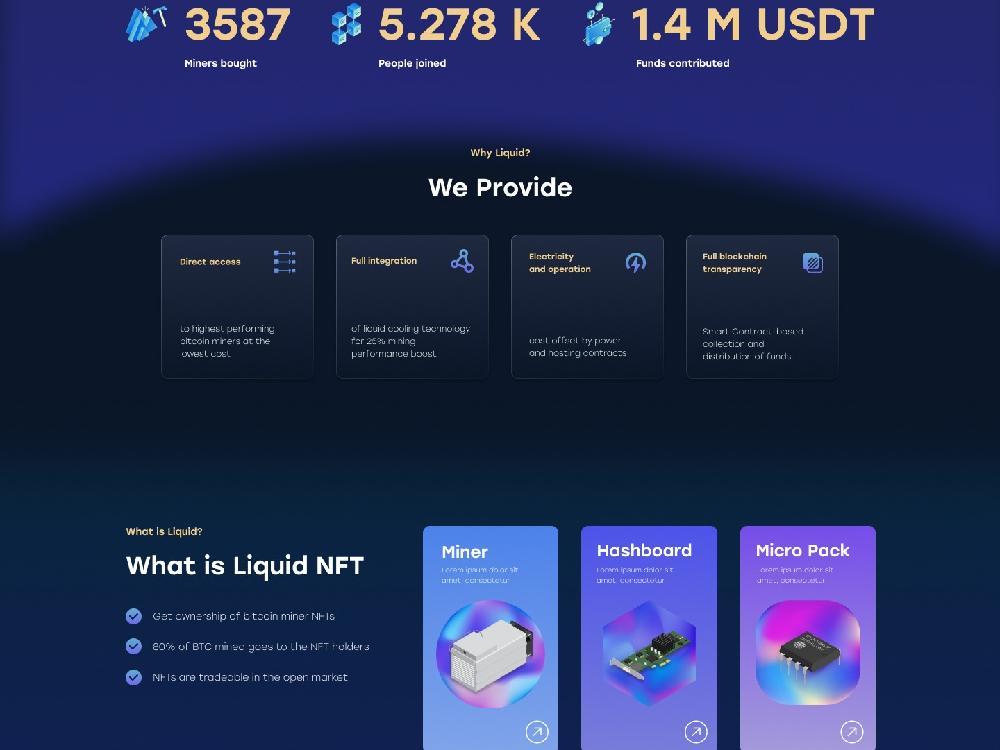
Complete restaurant menu ecosystem with Figma Plugin, Admin Panel, and Desktop Display App integrated with 8 POS systems
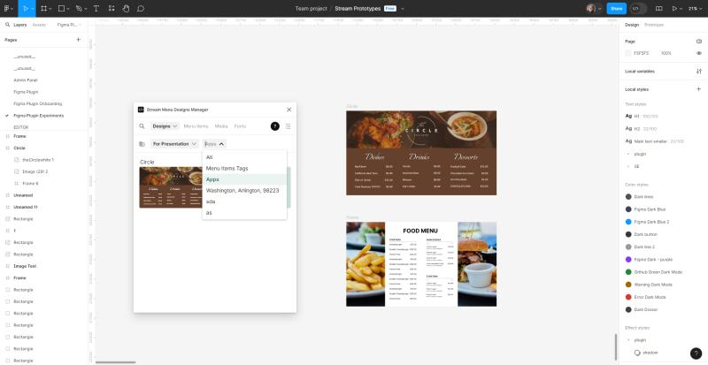
Business frontend application with GitLab CI/CD pipeline
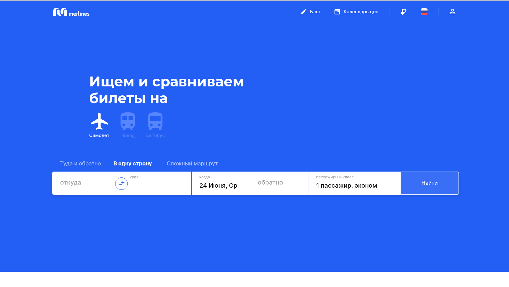
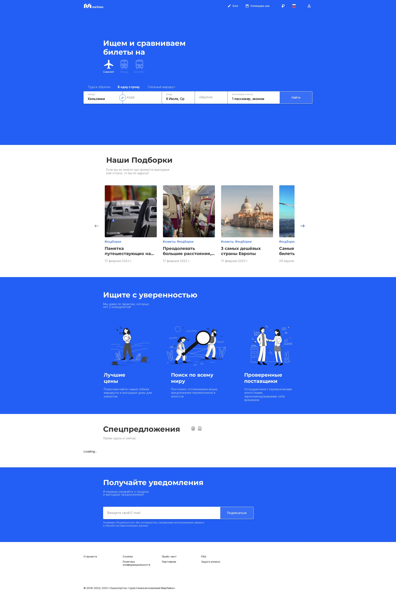
Full-stack code audit with security analysis, code duplication audit, and migration recommendations
View on GitHub →TypeScript 2D polygon layout library with blocks, transforms, and import/export
View on GitHub →Multi-language microservice finance platform
Link management platform with production NestJS API and React frontend
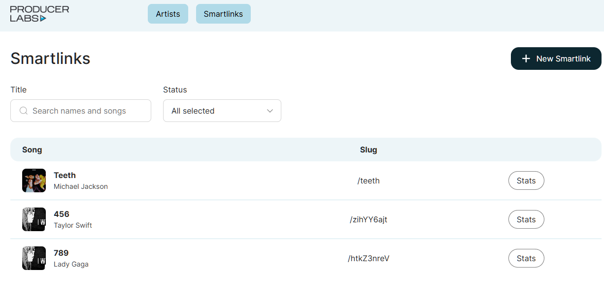
High-throughput DEX trading strategies with Solana blockchain integration
View on GitHub →Collection of 5 browser-based casino games
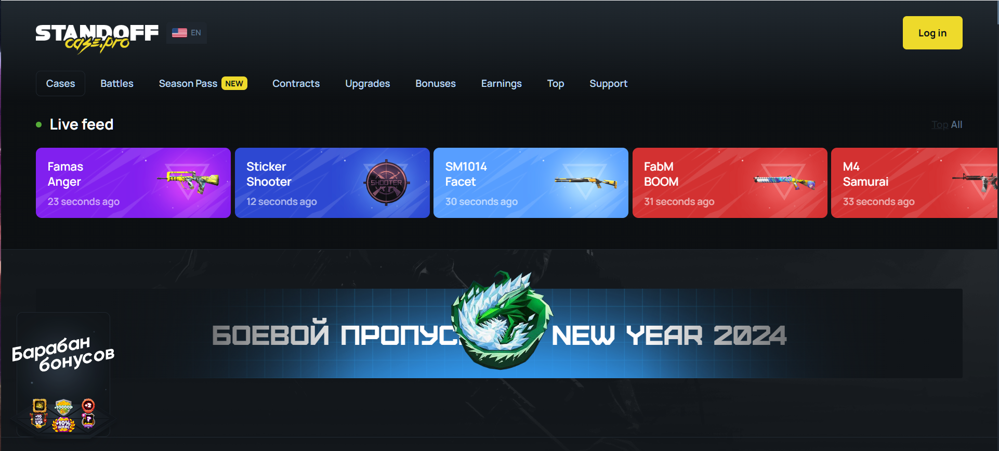
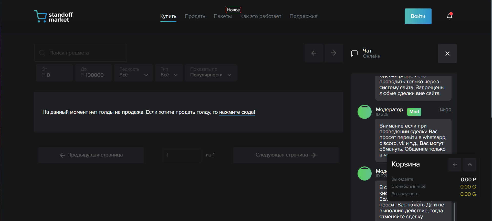
Custom TypeScript compiler toolchain with plugins for ESLint, TSServer, and Vite
View on GitHub →Sales platform with CRM functionality
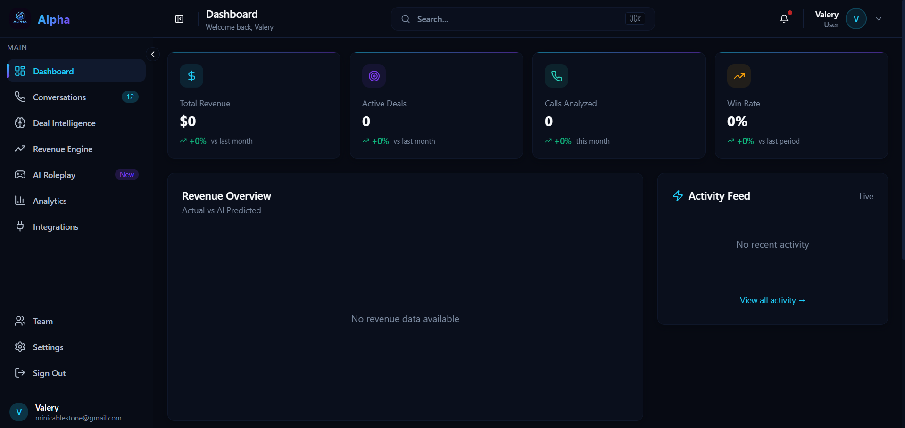
Technologies I work with daily
How I take a project from idea to production
Requirements gathering, feasibility study, timeline estimation, and stack selection.
System design, data modeling, API contracts, infrastructure planning.
Iterative delivery with code reviews, testing, and regular check-ins.
CI/CD pipelines, infrastructure provisioning, SSL/TLS, DNS configuration.
Monitoring, incident response, performance optimization, ongoing maintenance.
How I engage with clients
Preferred engagement model for EU clients. Invoice-based, clear scope, predictable terms.
Registered in Montenegro. VAT-compliant. Works with EU and US clients across time zones.
I use whatever solves the problem best — not locked into any single technology stack.
Daily updates via Telegram or email. Weekly syncs. Transparent progress reporting.
Based in CET/CEST. Works with US East Coast overlap and async-first collaboration.
Signed NDAs. Secure code practices. No credentials in repos. SSH key-only auth.
Have a project in mind? Reach out through any channel below.